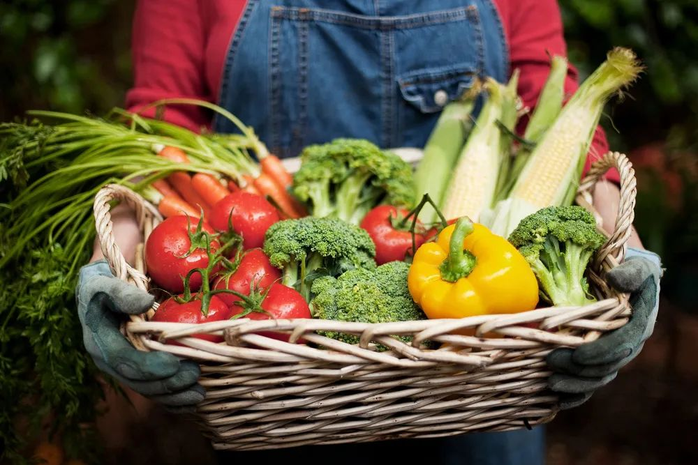
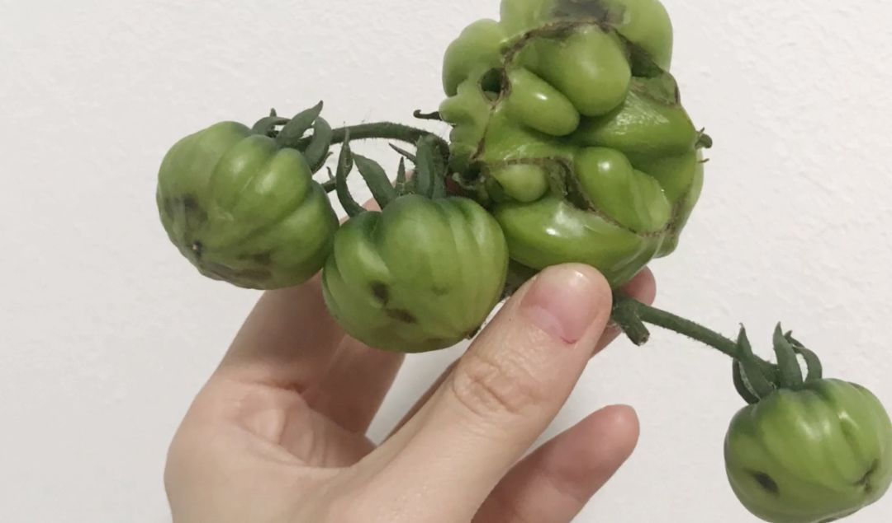
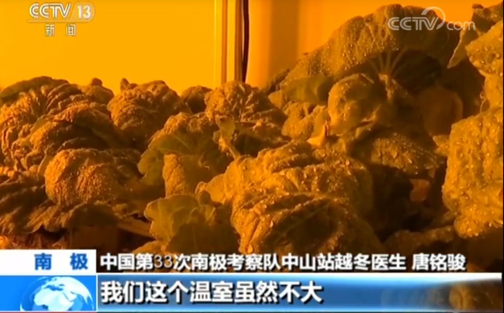

医生的语言——写在意大利疫情最暗的隧道深处
原文链接 备份链接 这是汪玮意疫记的第12篇。 好几天没有记录了。发生了很多事。不过我们都很好，我，女儿，女儿她爸。Momo 和 Oliver——我们的两条狗——除了有一点抱怨出门时间太短次数太少之外，其他都很好。 我好像不太可能把所有发 …

点击上方物质生活参考加星标！
物质生活参考

作者：王路
来源：物质生活参考（ID：wzshck）
01.
嘉楠的父母在北京度过了比预想中漫长得多的时间。
因为意外的疫情，计划中的过年七天乐，变成了被迫滞留两个多月。超长无缝近距离共处率先逼疯的是父母，老家疫情稳定后，两人迫不及待地返家。
嘉楠重新过上了自在的独居生活。与从前稍有不同的是，除了照顾自己，她还要照顾老妈托付给她的宝贵资产：一盆小葱、一盆青蒜、一盆生菜，还有一盘豆芽。
从前，嘉楠对父母在家种菜的行为敬谢不敏。一个合乎理想的独居小家里，养的应该是精致的多肉或水培绿植，种菜似乎过于朴实无华。
但疫情发生后，形势立转。在买菜主要靠秒杀抢购的那几日，家中蓬勃生长的几盆菜，俨然成了嘉楠最后的心理防线：“从来没有这么深刻地认识到什么叫‘手中有粮，心里不慌’。”
心境不同，花盆里的菜也越看越顺眼。小葱和青蒜碧绿挺拔，颇具观赏性。豆芽则是发育飞快，几天就见收成，比起工作中难缠的甲方和改不完的PPT，炒一盘自己种的菜，似乎更有成就感。
对于成长于城市的年轻人来说，种菜已经是个陌生的技能。而疫情意外地让我们重新点亮了这个源远流长的非物质文化遗产级种族天赋。
在春节过后外卖和快递不甚顺畅的那些日子里，会做饭一度成为最新时髦技能，朋友圈被凉皮和蛋糕霸屏。在这条非常时期的鄙视链上，唯一能秒杀做饭的，大概就是种菜。
据说疫情像一面镜子，毫不留情地暴露出每个国家最脆弱的环节；被迫居家则创造了难得的外部条件，各民族的种族天赋和特质得以展露无遗。
意大利人在阳台上唱歌剧、拉小提琴，充分展现了艺术国度的风范；而我国人民除了化身中华小当家，还热衷于争当阳台陶渊明：唱歌不大行，做饭种菜第一名。
父母辈首先发挥优势，利用手头一切资源积极种菜。青蒜小葱信手拈来，生菜韭菜不在话下，经验较为丰富的长辈，已经吃上了自己种的西红柿。
年轻人种菜更依赖网络。花盆、种子、发豆芽机开始热销，种菜教程播放量猛增。有些雄心勃勃的选手，在成功收割第一波青蒜之后膨胀不已，开始摩拳擦掌，研究阳台小菜园的可行性。
大概可以大胆断言：中国人种菜的传统和种族天赋，肯定不会在这届年轻人手里中断。
02.
在家种菜爱好者们喜欢自称“阳台陶渊明”。听上去十分文艺，但仔细推敲，不免为他们的种菜生涯感到担忧。毕竟，从陶渊明诗中的描述看，他的菜种得并不怎么样。
一年多前，华中师大教授戴建业的语录在网上爆红，其中流传最广的，是他对陶渊明那句“种豆南山下，草盛豆苗稀”的犀利吐槽：
“第一句那么隆重，你以为他种得蛮好，结果‘草盛豆苗稀’，种的个鬼田。”

戴教授精研魏晋六朝诗歌，著有研究陶渊明的专著，属于陶渊明铁粉，如此吐槽实乃欲扬先抑，粉到浓时粉似黑。但对于广大“阳台陶渊明”来说，“种豆南山下，草盛豆苗稀”是真实扎心。
“种豆南山下”抒发了我们对种菜和田园生活的情结，而“草盛豆苗稀”则犀利地指出了“阳台陶渊明”们面对的残酷现实：菜么得几颗，杂草和蚊虫倒是收获了不少。
青蒜豆芽这种水培即可茁壮成长的蔬菜，几乎和绿萝一样好养。但如果有更高的追求，难免就要遭受种种意想不到的挫折。
新手选种就是一大坑。当年流行买种子种花时，多少人都曾经体验过种了仨月才发现货不对板的惨痛。目前，在家种菜的市场规模尚不大，种菜博主们通常会推荐找淘宝上提供分装的商家。
常年四体不勤的都市人，也很难搞清土和肥料如何搭配。B站一位种植UP主就曾有如此遭遇：兴高采烈地种下西红柿，结果因为钙质不足，头两批收获的都是这样的果实[1]。

种菜的过程也可能会饱受惊吓。“欢言酌春酒，摘我园中蔬”的理想很美好，但在现实中，白菜叶招虫子、红薯叶招蜘蛛，足以让所有怕虫子的人魂飞天外。
没种过菜的人，很少会意识到种菜需要消耗多少水。你或许出得起水费，但住在楼房，排水是大问题。解决方案要么是花钱配套滴灌设备，要么是做好阳台防水、铺好隔水垫和防水布。
总之，现阶段能在阳台上花式种菜的人，除了有坚定的意志，还要有坚韧的精神、超乎寻常的耐心和屡败屡战的勇气，以及天时地利人和。
在国外，最广为人知的阳台种菜法，来自美国退休土木工程师梅尔•巴塞罗缪。他在1975年退休后才开始园艺生涯，起初和所有人一样，满腔热情和期盼换来满园疯长的杂草。不过，失败之后，他没有放弃，而是开始反思传统园艺种植的不合理之处[2]。
巴塞罗缪认为，过于粗放的种植方式导致菜园的养料都被杂草吸收。经过反复试验，他提出了自己的解决方案：设计出一种1.2米×1.2米的种植箱，充分利用小空间种植蔬菜。

按照这套他发明的“一米菜园”种植法，种植箱通常被等分为16个小格子。卷心菜、花椰菜、西红柿、茄子等可以每格种1棵；生菜、油麦菜等可以每格种4棵，洋葱、菠菜等可以每格种9棵，芝麻菜、香菜等可以每格种16棵。其中要注意，同一个格子里不能种2种以上相同科属的蔬菜，因为品性接近的蔬菜容易滋生同类病害[3]。
“一米菜园”适合新手快速上手，不需要花费太多时间打理，而且颜值超高，看上去赏心悦目。但它的缺点也很明显：空间太小、土壤太浅、浇水需求大，并非适用于所有人[4]。
阳台种菜，道阻且长。不过，我们至少可以学习陶渊明的精神，即便“草盛豆苗稀”也没关系，重要的是，“但使愿无违”。
03.
中国人可能多少都有一点乡土田园情结。至少，种菜算得上是中国历史中一项悠久而光荣的传统。
经典红歌《南泥湾》，唱的是八路军三五九旅开垦荒地，“又战斗来又生产”的故事。而军队屯田种粮种菜的历史可以向前追溯到两千年多前，《居延汉简》有“韭三畦，葱三畦，葵七畦”的记载，足见早在汉代，边疆军队就开始种菜。
种菜还无意中解决了许多难题。据随同郑和下西洋的马欢在《瀛涯胜览》中记载，当时的船员在木盆里种植蔬菜、生姜[5]，据说郑和船队中之所以没有发生大大规模坏血病，就是因为有蔬菜保障。
当代中国人则在世界各个角落创造种菜传奇。大使馆、维和部队把菜种到了海外↓
浙商把菜种到了迪拜沙漠↓
随队医生把菜种到了南极科考站↓


至于中国陪读家长在耶鲁种菜，属于基本操作，无须大惊小怪。

对种菜的热爱，有十分实际的理由。历史上，中国有数千次饥荒，直到我们上一辈人，仍然有吃不饱饭的记忆。见缝插针地种菜、节约，于很多人来说，是曾经的艰辛生活留下的本能。
但除此之外，我们也是真的喜欢和种菜有关的一切。即便当代年轻人已经少有亲手种菜的机会，但十多年前互联网兴起时，最流行的游戏是“偷菜”；如今视频自媒体兴起，大家看得如醉如痴的，也是回乡种菜的李子柒、花式吃鼠的华农兄弟。
这大概是因为，每一株蔬菜长大，就是在见证生命的苏醒和生长。这本身已经足够令人欣慰和愉悦。
种它、养它、吃它。这应该就是我们对一棵菜最大的尊敬。
参考资料：
[1] 汪淑芬的小阳台：《如何在阳台上种番茄/西红柿（上集） —— 关于品种的选择，播种育苗，花盆营养土与枝条牵引》（视频），Bilibili
[2] M. Bartholomew, All New Square Foot Gardening – Grow More in Less Space
[3] 徐莹：《阳台种菜 | 零基础一米菜园打造手册》，《LOHAS》乐活杂志2016年6月刊
[4] J.Nick, “The Pros and Cons of Square Foot Gardening”, Good House Keeping, Jul-30-2018
[5] 《行帆万里吃什么？郑和远洋船队船上种菜养鸡》，《楚天都市报》2004年8月7日
本文头图购自视觉中国，其余图片来自视频及网页截图

△长按二维码，添加物质生活君微信，
回复“粉丝”，进入物质生活粉丝群，
获取独家优质生活参考。

\= 推荐阅读=

被疫情耽误的龙虾，我想拯救它

听我的，别学王思聪养柯尔鹅
虽然没有开学，江湖上依然流传着《黄冈密卷》的传说
- END-

原文链接 备份链接 这是汪玮意疫记的第12篇。 好几天没有记录了。发生了很多事。不过我们都很好，我，女儿，女儿她爸。Momo 和 Oliver——我们的两条狗——除了有一点抱怨出门时间太短次数太少之外，其他都很好。 我好像不太可能把所有发 …
原文链接 备份链接 体坛周报全媒体驻意大利记者 陈硕麟 3月15日，意大利人通过网络发起了一个号召，让大家在晚上9点的时候将家中灯光关掉，走到阳台或者窗户旁边，打开手机探照灯，这样在当天晚上的卫星拍摄照片中，就会看到一个被点点亮光勾勒成型 …
原文链接 备份链接 今天是3月16日，月相为49%的下弦月。 It is March 16 with a 49 percent of Last Quarter. 距离新月还有 8 天。 There are 8 days until New …
原文链接 备份链接 雪中挖藕人。图片来自：图虫 记者： 赵晓娟 编辑 ：昝慧昉 “ “不止粉藕难买到，什么藕都不好买到，因为藕农歇了导致产量断了”。 ” 在湖北买不到湖北藕？ 家住武汉光谷和后湖的两名消费者抱怨，现在买菜不易，买藕则难上加 …
原文链接 备份链接 小P昨天发了煮豆丝的朋友圈，说实话我也看馋了。所以她写了这样一篇文章，向大家介绍一下武汉的这种家常吃法。 昨天我家的晚餐就是腊肉煮豆丝，里面配了切开的肉圆、糍粑和小白菜。拍到朋友圈，下面哀号一片。在武汉的朋友们直斥我炫 …